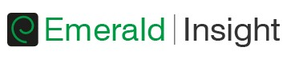

Acesso restrito à comunidade universitária da UNIP

|
Serviço de Descoberta UNIP |
O EDS é uma ferramenta de pesquisa e descoberta que agrega grande parte das fontes de informação eletrônicas acessíveis através do portal da UNIP, tais como: bases de dados de artigos científicos; livros eletrônicos; conferências; relatórios técnicos etc.

Academic Search Premier
Essa base de dados multidisciplinar fornece texto completo para mais de 8.500 periódicos, incluindo texto completo para mais de 4.600 títulos revisados por especialistas. Os arquivos PDF datam de 1975 ou mais e estão disponíveis para mais de uma centena de revistas especializadas, bem como são fornecidas referências citadas pesquisáveis para mais de 1.000 títulos.

Biblioteca Virtual Universitária
Mais de 4 mil livros eletrônicos, em português, nas mais diversas áreas do conhecimento, tendo como principais editoras: Pearson, Manole, Contexto, Intersaberes, Casa do Psicólogo, Papirus, Ática, Scipione, Cia das Letras, Rideel, Vozes, Autêntica etc. Acesso através da Área do Aluno ou do app Unip para Android e iOS.

Emerald Insight
Coleção de publicações periódicas com concentração nas áreas de Administração, Arquitetura, Contabilidade, Ciência da Informação, Engenharia Mecânica, Enegenharia Elétrica e Engenharia de Produção.
Gale - Academic OneFile
Coleção de periódicos com texto completo e referências nas áreas de Ciências Exatas, Tecnologia, Ciências Médicas, Ciências Sociais Aplicadas, Artes e Humanidades.
Gale Virtual Reference Library
A coleção da GVRL é composta de almanaques, enciclopédias, manuais, índices, diretórios, de livros premiados da Cengage Learning, de vários segmentos: tais como história, literatura, arte, negócios, tecnologia e medicina.
Minha Biblioteca
Mais de 9 mil livros eletrônicos, em português, nas mais diversas áreas do conhecimento, tendo como principais editoras: Saraiva, Atlas, Manole, ArtMed, Grupo GEN, Bookman, Zahar, Érica, Forense, Guanabara Koogan, Cengage Learning, AMGH, LTC, Autêntica, Método, Penso, Roca, Santos, Artes Médicas, Amarilys etc. Acesso através da Área do Aluno ou do app Unip para Android e iOS.
Plataforma Digital de Livros da Editora Senac
Estão disponíveis em texto completo pela Editora Senac São Paulo mais de 500 livros eletrônicos em diversas áreas, como gastronomia, moda, meio ambiente, gestão e negócios, saúde, hotelaria, turismo, eventos, tecnologia da informação, design, arquitetura, bem-estar e beleza e comunicação e artes.
SAGE Journals On-line
Coleção de periódicos com concentração nas áreas de Ciências Sociais Aplicadas e Ciências Humanas.
Science Direct
Estão disponíveis publicações da Elsevier e de outras editoras científicas, cobrindo as áreas de Ciências Biológicas, Ciências da Saúde, Ciências Agrárias, Ciências Exatas e da Terra, Engenharias, Ciências Sociais Aplicadas, Ciências Humanas e Letras e Artes.
SCOPUS (Elsevier)
Base de dados de resumos e de citações da literatura científica e de fontes de informação de nível acadêmico na Internet. Indexa mais de 21 mil periódicos, de 5 mil editores internacionais, 24 milhões de patentes, além de outros documentos.
SpringerLink
Coleção de publicações com ênfase nas áreas de Ciências Biológicas, Ciências da Saúde, Ciências Agrárias e Ciências Exatas e da Terra. Clique no título desejado para folhear os fascículos e consultar os resumos e os textos completos dos artigos.
Web of Science (Thomson Reuters Scientific)
Base multidisciplinar que indexa somente os periódicos mais citados em suas respectivas áreas. É também um índice de citações, informando, para cada artigo, os documentos por ele citados e os documentos que o citaram. Possui hoje mais de 9.000 periódicos indexados.
Wiley On-lineLibrary
Esta coleção cobre as áreas de Ciências Biológicas, Ciências da Saúde, Ciências Exatas e da Terra, Ciências Agrárias, Ciências Sociais Aplicadas, Ciências Humanas e Linguística, Letras e Artes.
BioOne
A BioOne reúne periódicos nas áreas de Ciências Biológicas e Ciências Ambientais publicados por associações profissionais e sociedades científicas, cobrindo temas como aquecimento global, pesquisas em células-tronco e ecologia e biodiversidade. A base foi criada em 1999 a partir da colaboração de cinco entidades: o American Institute of Biological Sciences (AIBS), o Scholarly Publishing & Academic Resources Coalition (SPARC), a Universidade do Kansas, a Greater Western Library Alliance (formada por 12 consórcios de bibliotecas) e a Allen Press, Inc.
Nutrition Reference Center
É um recurso de informação indispensável sobre nutrição baseada nas evidências com um formato de uso muito simples com informações sobre dietoterapia, dietoterapia para doenças específicas, tipos de dietas e seus benefícios, carência nutricional, terapias nutricionais alternativas, nutrição parenteral etc.
American Society of Civil Engineers - ASCE
Estão disponíveis publicações contendo informações científicas, técnicas e profissionais nas áreas de Engenharia Civil, GeoCiências e Ciências Ambientais.
Dentistry & Oral Sciences Source
Abrange todas as áreas relacionadas à odontologia, incluindo assistência odontológica pública, endodontia, dor e cirurgia facial, odontologia, patologias/cirurgias/radiologias oral e maxilofacial, ortodontia, odontologia pediátrica, periodontia e prostodontia. A base de dados é atualizada semanalmente no EBSCOhost.
Business Source Premier
É a base de dados de pesquisa de negócios mais utilizada no setor de pesquisa, fornecendo texto completo de mais de 2.300 periódicos científicos e mais de 1.100 publicações analisadas por especialistas. Esta base de dados fornece texto completo que remonta a 1886 e referências citadas de pesquisa que remontam a 1998. A Business Source Premier: Government Edition supera seus concorrentes em termos de cobertura em texto completo em todas as disciplinas da área de negócios, incluindo marketing, administração, MIS, POM, contabilidade, finanças e economia. Esta base de dados é atualizada diariamente.
RT On-line
A combinação de um século de conteúdo e qualidade editorial da editora Revista dos Tribunais com a tecnologia inovadora da Thomson Reuters, companhia líder mundial no fornecimento de informação inteligente para negócios e profissionais, resultou na Revista dos Tribunais On-line, a melhor e mais completa solução de pesquisa jurídica digital que reúne: doutrina, jurisprudência, legislação, súmulas, notícias e outros conteúdos da área de Direito.
Thomson Reuters Proview
Plataforma profissional que lhe permite interagir com seus livros eletrônicos de maneira totalmente nova. Este aplicativo gratuito permite que você acesse seus conteúdos jurídicos mais confiáveis de onde você mais precisa: em todo lugar. Importantes obras do Direito, tais como códigos comentados, manuais, cursos, obras de preparação para o exame da Ordem e doutrinas.
vLex
Base de dados na área do Direito e ciências afins. Contém cerca de 80 milhões de documentos divididos em legislação, jurisprudência, livros, periódicos e jornais de mais de 134 países, na íntegra e com permissão para download das obras. A plataforma possui ferramentas de tradução das pesquisas e dos textos das obras. Do Brasil, destacam-se livros e revistas das editoras LTr, Malheiros, Mundo Jurídico, Bonijuris, Editora JH Mizuno, LEUD, PIllares e FGV Publicações.
GEDWeb - Gerenciador de Norma Técnicas Eletrônicas pela Web
Avançada ferramenta para acesso à consulta, tornando possível, em ambiente Web, múltiplos usuários obterem acesso às Normas Técnicas Brasileiras, Internacionais e Mercosul em formato digital já adquiridas pela UNIP.

Comut Pessoa Física
As bibliotecas Unip divulgam o serviço de comutação bibliográfica COMUT/IBICT à sua comunidade acadêmica (alunos, professores etc).
O sistema COMUT, desenvolvido pelo Instituto Brasileiro de Informações em Ciência e Tecnologia, permite que o usuário (pessoa física) faça suas solicitações de cópias de artigos e outros documentos, direto da Internet, sem o intermédio da biblioteca.
Full Text Finder
É uma ferramenta para gerenciamento de títulos de periódicos. Fornece um modo simplificado para encontrar o texto completo dos periódicos eletrônicos da UNIP, independentemente de onde estes recursos estiverem localizados – nos sites dos editores, dentro de bases de dados ou até mesmo em portais de busca.